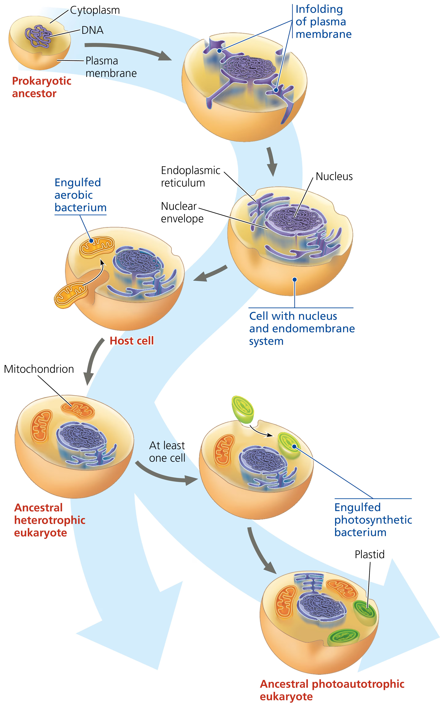
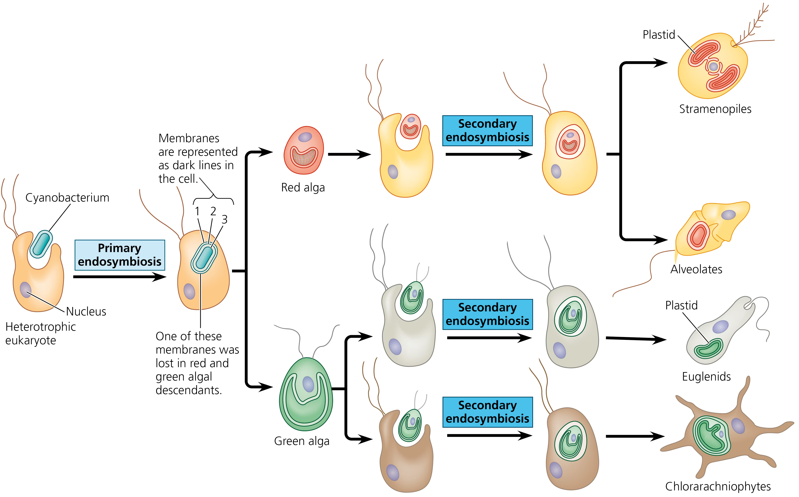
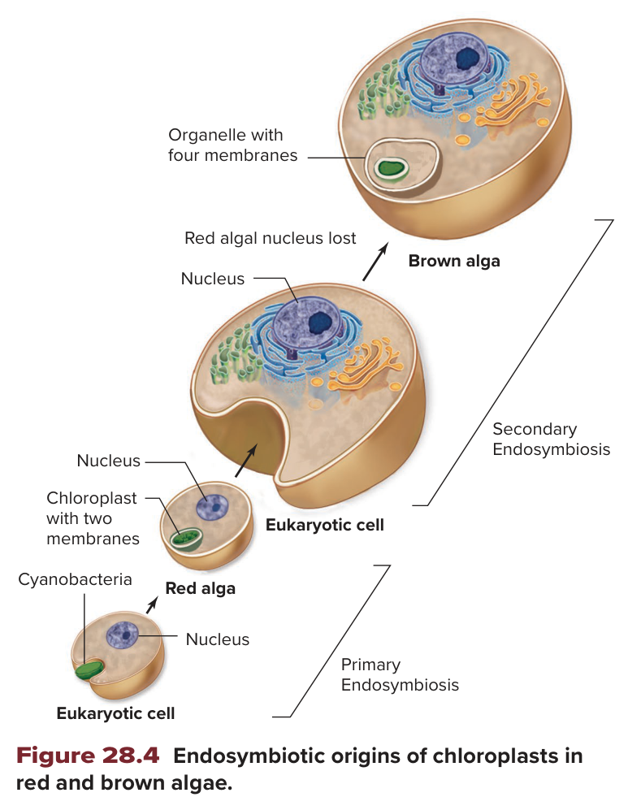
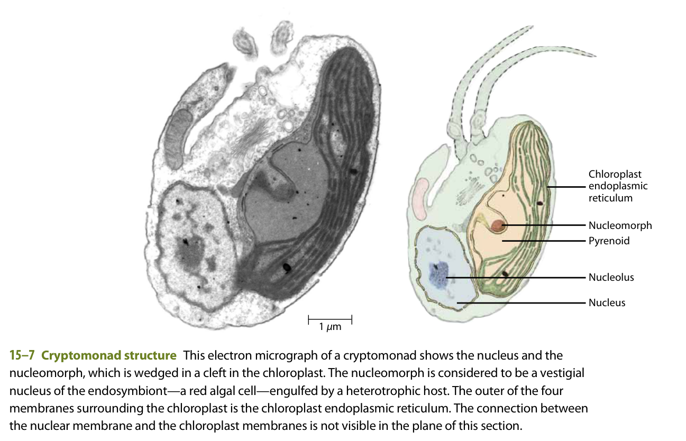

內共生假說：宿主是原核還是真核？
從古菌融合到初級、次級內共生
整合普通生物學（Campbell 13e、Freeman 8e、Sadava 12e、Raven 13e、Solomon 11e）、普通植物學（Raven 8e）、細胞生物學（Alberts ECB6、Becker 10e、Lodish 9e）、微生物學（Prescott 12e）與臺灣高中各版教材之白紙黑字考證
🎯 核心概念總覽：為什麼高中、普植與最新普生聽起來像在打架？
讀生物時常卡在一個問題：高中課本說「真核細胞吞入原核細胞」，普植課本也寫「真核細胞吞下去」又講「褐藻吞掉整個紅藻」，但最新說法卻常強調「吞粒線體時是原核、吞葉綠體時才是真核」。把三個演化時間點與兩套起源模型拆開對照，看似打架的說法其實完全接得起來：
① 粒線體起源（最早）：最新證據顯示最初宿主是「Asgard 阿斯加德古菌（原核）」與 α-變形菌共生融合；傳統「由外而內」模型則假設先由細胞膜內陷成核、變成「尚無粒線體的原始真核吞噬細胞」再吞細菌。
② 初級內共生（較晚）：所有課本 100% 一致——因粒線體早於色素體出現，此時吞入藍綠菌的宿主確定已經是「有核又有粒線體的異營真核生物」，演化出紅藻與綠藻（2 層膜葉綠體）。
③ 次級內共生（更晚）：另一群異營真核生物直接吞入整顆紅藻或綠藻，演化出褐藻等不等鞭毛類（4 層膜葉綠體）或眼蟲（3 層膜）。
② 初級內共生（較晚）：所有課本 100% 一致——因粒線體早於色素體出現，此時吞入藍綠菌的宿主確定已經是「有核又有粒線體的異營真核生物」，演化出紅藻與綠藻（2 層膜葉綠體）。
③ 次級內共生（更晚）：另一群異營真核生物直接吞入整顆紅藻或綠藻，演化出褐藻等不等鞭毛類（4 層膜葉綠體）或眼蟲（3 層膜）。
| 來源／模型 | 取得粒線體時的宿主 | 取得初級葉綠體時的宿主 | 關鍵機制差異與說明 |
|---|---|---|---|
| 高中生物現行教材 （泰宇必修、南一／全華／來源 B 選修一） |
（原始）真核細胞 透過胞吞作用吞入好氧菌 |
（原始）真核細胞 吞入光合菌（藍綠菌） |
教學簡化，採經典「膜內陷成核 → 再吞原核生物」的連續敘事。 |
| 傳統普植與細胞學模型 （Raven 植物學 8e、Becker 10e 由外而內說） |
無細胞壁原核演化出固醇與細胞骨架成「原始吞噬細胞」，膜內陷成核後吞細菌 | 異營真核細胞 （已具細胞核與粒線體） |
由外而內學說（Outside-in）：核膜與吞噬能力先形成，因此吞噬細菌前即具原始真核特徵。 |
| 現代兩域生命樹定論 （Campbell 13e、Freeman 8e、Alberts ECB6、Becker 10e 由內而外說） |
Asgard 古菌（原核） 與 α-變形菌共生融合 |
異營真核細胞 （確定已具核與粒線體） |
由內而外學說（Inside-out）＋原核融合：真核生物從古菌域內部誕生，Asgard 古菌以膜突起捕捉外共生細菌，再於外側形成細胞質與內質網。 |
初級、次級與三級內共生的演化階層與膜層數
| 內共生層級 | 吞噬關係（宿主 ← 共生體） | 葉綠體包膜層數 | 代表生物類群 | 演化痕跡與辨識證據 |
|---|---|---|---|---|
| 初級內共生 （Primary） |
異營真核細胞 ← 藍綠菌（原核） | 2 層膜 （藍綠菌內外膜） |
原始色素體生物（Archaeplastida）： 灰胞藻、紅藻、綠藻、陸生植物 |
灰胞藻雙膜間保留藍綠菌肽聚糖細胞壁殘跡；紅藻與綠藻膜運輸蛋白與藍綠菌內外膜同源。 |
| 次級內共生 （Secondary） |
異營真核細胞 ← 整顆紅藻（真核） | 4 層膜（多數） | 不等鞭毛類（Stramenopiles，含褐藻、矽藻、金藻）、囊泡蟲類（含頂複胞器 apicoplast）、隱藻、定鞭藻 | 褐藻的紅藻細胞核完全退化消失；隱藻第 2、3 層膜之間仍保有退化紅藻核（核形體 nucleomorph），最外層為葉綠體內質網。 |
| 次級內共生 （Secondary） |
異營真核細胞 ← 整顆綠藻（真核） | 3 層膜（眼蟲）或 4 層膜（綠胞藻） | 眼蟲類／裸藻類（Euglenids）、 綠胞藻類（Chlorarachniophytes） |
眼蟲類演化過程中失去一層膜而留 3 層膜；綠胞藻保留 4 層膜與源自綠藻的核形體。 |
| 三級內共生 （Tertiary） |
渦鞭藻（真核）← 具次級色素體的藻類 | 3 至 4 層以上 | 部分渦鞭藻（Dinoflagellates） | 失去原葉綠體後，吞入隱藻、定鞭藻或矽藻以替換色素體。 |
🔬 經典教科書原圖精選（6 張核心圖證）

圖證 1｜Becker's World of the Cell 10e 圖 4.15：真核生物起源的「由外而內」vs.「由內而外」兩大學說對比。上方為傳統由外而內模型（細胞膜內陷形成核膜後再吞噬細菌）；下方為 David 與 Buzz Baum（2014）提出的由內而外模型（古菌伸出膜突起捕捉表面細菌，突起融合擴張成內質網與細胞質，原細胞膜反而成為核膜）。
Figure 4-15 Theories of Endosymbiosis. Outside-in theories vs. inside-out theories (Becker's World of the Cell, 10th ed., Ch. 4).

圖證 2｜Essential Cell Biology 6e (Alberts) 圖 1.15：深海 Asgard 古菌緊抱原核共生夥伴的掃描電鏡實拍。日本 Imachi 等人（Nature 2020）歷經長期培養觀察到這群與真核親緣最近的古菌：它沒有胞器也沒有吞噬泡，卻長出細長膜質分枝纏繞著細菌與另一種古菌外共生體，為古菌如何捕獲細菌提供現生線索。
Figure 1–15 An Asgard archaeon is caught clutching a pair of prokaryotic partners (Imachi et al., Nature 577:519–525, 2020; Alberts ECB6, Ch. 1).

圖證 3｜Campbell Biology 13e 圖 25.10：粒線體與色素體經由系列性內共生起源。注意對比細節：Campbell 13e 正文已明確寫出「最初的宿主被認為是一種古菌」，先獲得好氧異營細菌（演化成粒線體）成為祖先異營真核生物，之後至少有一次事件再吞入光合細菌成為祖先光自營真核生物；而示意圖仍保留膜內陷的經典繪法。
Figure 25.10 A hypothesis for the origin of mitochondria and plastids through serial endosymbiosis (Campbell Biology, 13th ed., Ch. 25).

圖證 4｜Campbell Biology 13e 圖 28.4：初級內共生與次級內共生造就色素體多樣性。左方異營真核生物吞入藍綠菌（初級內共生）並分化為紅藻與綠藻；上方紅藻再經次級內共生被異營真核吞入，產生異鞭毛類（Stramenopiles，含褐藻）與囊泡蟲類（Alveolates）；下方綠藻經次級內共生產生裸藻類與綠胞藻類。
Figure 28.4 Diversity of plastids produced by endosymbiosis (Campbell Biology, 13th ed., Ch. 28).

圖證 5｜Raven Biology 13e 圖 28.4：紅藻與褐藻葉綠體的內共生起源。圖示一目了然：紅藻經由「真核細胞吞入藍綠菌」的初級內共生形成（具兩層膜的葉綠體）；接著另一個真核細胞再吞入整顆紅藻（次級內共生），紅藻細胞核消失，形成褐藻體內「具有四層膜的胞器」。
Figure 28.4 Endosymbiotic origins of chloroplasts in red and brown algae (Raven Biology, 13th ed., Ch. 28).

圖證 6｜Raven Biology of Plants 8e 圖 15.7（普通植物學）：隱藻的葉綠體內質網與核形體（Nucleomorph）。次級內共生的鐵證：環繞葉綠體的 4 層膜最外層稱為葉綠體內質網，而夾在第 2 層與第 3 層膜之間仍留有被吞入紅藻的退化細胞核——核形體（在褐藻中此細胞核則已完全消失）。
Figure 15–7 Cryptomonad structure showing the chloroplast endoplasmic reticulum and the vestigial red algal nucleus (nucleomorph) (Raven Biology of Plants, 8th ed., Ch. 15).
📖 第一部分原文考證：宿主是原核還是真核？粒線體與 Asgard 古菌
1. 《Campbell Biology》13e — Chapter 25 & Chapter 28
Campbell Biology 13e · Ch. 25 地球生命史（Serial Endosymbiosis）
"Although all eukaryotes have mitochondria or remnants of these organelles, they do not all have plastids (a general term for chloroplasts and related organelles). Thus, the serial endosymbiosis hypothesis supposes that mitochondria evolved before plastids through a sequence of endosymbiotic events. As shown in Figure 25.10, both mitochondria and plastids are thought to have descended from bacterial cells. The original host—the cell that engulfed the bacterium whose descendants gave rise to the mitochondrion—is thought to have been an archaean."
「雖然所有真核生物都有粒線體或其殘餘，卻不是所有真核生物都有色素體（plastid，葉綠體及相關胞器的統稱）。因此，系列性內共生（serial endosymbiosis）假說主張：粒線體是透過一連串內共生事件，在色素體之前先演化出來的。如圖 25.10 所示，粒線體與色素體都被認為是源自細菌細胞。而最初的宿主——那個吞下『後代演化成粒線體的細菌』的細胞——被認為是一種古菌。」
Campbell Biology 13e · Ch. 28 真核生物的起源與多樣化（Asgard 古菌與較晚期色素體）
"For example, there is strong evidence that eukaryotes originated from within the domain Archaea. Genetic sequence analysis suggests that the Asgard group of archaea are most closely related to the lineage that gave rise to eukaryotes (see Concept 27.4). One hypothesis is that the ancestor of eukaryotes was a relatively complex archaeal cell in which certain features of eukaryotic cells had evolved, such as a cytoskeleton that enabled it to change shape (and thereby engulf the alpha proteobacterium)."
"In addition to the evidence indicating that mitochondria are descended from a bacterium that was engulfed by an archaean, giving rise to the eukaryotes, there is also much evidence that later in eukaryotic history, a lineage of heterotrophic eukaryotes acquired an additional endosymbiont—a photosynthetic cyanobacterium—that then evolved into plastids."
"In addition to the evidence indicating that mitochondria are descended from a bacterium that was engulfed by an archaean, giving rise to the eukaryotes, there is also much evidence that later in eukaryotic history, a lineage of heterotrophic eukaryotes acquired an additional endosymbiont—a photosynthetic cyanobacterium—that then evolved into plastids."
「例如，有強力證據顯示真核生物起源於古菌域（domain Archaea）之內。遺傳序列分析指出，古菌中的阿斯加德（Asgard）類群與『衍生出真核生物的譜系』親緣關係最近。一個假說認為，真核生物的祖先是一個相對複雜的古菌細胞，其中某些真核細胞的特徵已經演化出來，例如能使它改變形狀（從而吞入那個 α-變形菌）的細胞骨架。」
「除了『粒線體源自被古菌吞入的細菌、從而產生真核生物』的證據外，也有許多證據顯示：在真核生物歷史的較晚期，有一個異營真核生物的譜系取得了一個額外的內共生體——一個行光合作用的藍菌——這個藍菌後來演化成色素體。」
「除了『粒線體源自被古菌吞入的細菌、從而產生真核生物』的證據外，也有許多證據顯示：在真核生物歷史的較晚期，有一個異營真核生物的譜系取得了一個額外的內共生體——一個行光合作用的藍菌——這個藍菌後來演化成色素體。」
2. 《Freeman Biological Science》8e — Chapter 27
Freeman 8e · Ch. 27 真核生物的多樣化（兩種宿主假說直接對比）
"How and when the momentous symbiosis that led to the mitochondrion occurred is hotly debated. Some scientists hypothesize that a primitive amoeba-like eukaryote engulfed a bacterium and simply failed to digest it in its lysosome, allowing it to take up residence. ... A new hypothesis gaining support is that the first eukaryote (and its mitochondria) may have been formed at the same time, as a result of an endosymbiosis between two prokaryotes—an archaeal host and a bacterium."
「導致粒線體出現的這場重大共生究竟如何、又在何時發生，目前仍有激烈爭論。有些科學家假設，一個原始的阿米巴樣真核生物吞噬了一個細菌，卻沒有在溶體中將其消化，使細菌得以住下來。……一項逐漸獲得支持的新假說認為，第一個真核生物及其粒線體可能同時形成，是兩個原核生物——一個古菌宿主與一個細菌——發生內共生的結果。」
3. 《Becker's World of the Cell》10e — Chapter 4
Becker 10e · Ch. 4 細胞與胞器（Outside-In vs. Inside-Out ＆ 雙層膜解釋）
"Outside-in theories suggest that in the ancestor of eukaryotic cells (called a protoeukaryote), the nuclear envelope formed by an invagination (infolding) of the plasma membrane, which eventually came to surround the cell’s DNA (Figure 4-15). These cells also developed the ability to engulf and ingest nutrients and particles—including smaller cells of bacteria and cyanobacteria—from the environment by phagocytosis ('cell eating')."
"As an alternative to 'outside-in' theories, others have suggested inside-out theories. ... These protrusions are proposed to have led ultimately to two innovations. First, they allowed the protoeukaryote to interact with and ultimately envelop nearby gram-negative bacteria. ... Second, as the protrusions expanded outward, they may have folded over and fused, forming the primitive endoplasmic reticulum and other structures of the endomembrane system. In such inside-out theories, the nuclear membrane originated from what was the outer plasma membrane of the host cell."
"In either the outside-in or inside-out scenarios, once the bacterium was engulfed, it should have had three membranes surrounding it (its own double membrane plus one from the host), but mitochondria today only have two membranes. Where did the outer membrane go? One idea is that the engulfed bacteria, now in the cytosol, broke free from the surrounding host membrane and then divided within the host."
"As an alternative to 'outside-in' theories, others have suggested inside-out theories. ... These protrusions are proposed to have led ultimately to two innovations. First, they allowed the protoeukaryote to interact with and ultimately envelop nearby gram-negative bacteria. ... Second, as the protrusions expanded outward, they may have folded over and fused, forming the primitive endoplasmic reticulum and other structures of the endomembrane system. In such inside-out theories, the nuclear membrane originated from what was the outer plasma membrane of the host cell."
"In either the outside-in or inside-out scenarios, once the bacterium was engulfed, it should have had three membranes surrounding it (its own double membrane plus one from the host), but mitochondria today only have two membranes. Where did the outer membrane go? One idea is that the engulfed bacteria, now in the cytosol, broke free from the surrounding host membrane and then divided within the host."
「由外而內學說主張，在真核細胞祖先（稱為原始真核生物）中，核膜是由細胞膜內陷（向內摺疊）形成，最終包圍細胞的 DNA……這些細胞也發展出藉由吞噬作用吞入細菌與藍綠菌的能力。」
「與『由外而內』學說不同，另一些人提出由內而外學說……這些突起使原始真核生物能與鄰近的革蘭氏陰性細菌互動並捕獲；隨著突起向外擴張，它們摺疊並融合形成原始內質網與內膜系統，核膜源自宿主細胞原本的外部細胞膜。」
「無論由外而內或由內而外的情境，細菌一旦被吞入，理應有三層膜包圍它（其自身的雙層膜，加上宿主的一層膜），但現今粒線體只有兩層膜。一種想法是，被吞入且進入細胞質的細菌掙脫了周圍的宿主膜，隨後在宿主內部分裂。」
「與『由外而內』學說不同，另一些人提出由內而外學說……這些突起使原始真核生物能與鄰近的革蘭氏陰性細菌互動並捕獲；隨著突起向外擴張，它們摺疊並融合形成原始內質網與內膜系統，核膜源自宿主細胞原本的外部細胞膜。」
「無論由外而內或由內而外的情境，細菌一旦被吞入，理應有三層膜包圍它（其自身的雙層膜，加上宿主的一層膜），但現今粒線體只有兩層膜。一種想法是，被吞入且進入細胞質的細菌掙脫了周圍的宿主膜，隨後在宿主內部分裂。」
4. 《Essential Cell Biology》6e (Alberts) — Chapter 1
Alberts ECB6 · Ch. 1 細胞：生命的基本單位（Asgard 古菌電鏡培養證據）
"Examining these cultured archaea in an electron microscope, the researchers were treated to a view of a cell that looks like no other living prokaryote: a jumble of long, meandering branches extends from its small cell body. But even more astonishing, the Asgard archaeon was observed to harbor a pair of ectosymbionts: one bacterium and an unrelated archaeon that appear to be entangled in the strange creature’s spindly embrace (Figure 1–15). The discovery of this unusual archaeon—with its prokaryotic associates—suggests a mechanism by which an ancestral cell might have ultimately captured and established a relationship with an aerobic bacterium: the step that initiated the evolution of the eukaryotic lineage."
「以電子顯微鏡觀察這些培養的古菌時，研究人員看到一種不同於任何現生原核生物的細胞：一大團細長、蜿蜒的分枝，從微小的細胞本體向外延伸。更令人驚訝的是，他們觀察到 Asgard 古菌帶著一對外共生生物：一種細菌及一種無親緣關係的古菌，兩者彷彿都纏在這種奇特生物細長枝條的懷抱之中（圖 1.15）。這種特殊古菌及其原核生物夥伴的發現，暗示祖先細胞最終捕獲好氧菌並與之建立關係的可能機制；這一步開啟了真核生物支系的演化。」
5. 《Life: The Science of Biology》12e (Sadava) & 《Molecular Cell Biology》9e (Lodish)
Sadava 12e · Ch. 25 ＆ Lodish 9e · Ch. 12（語義界線與細胞核時機不確定性）
[Sadava 12e] "Biologists have hypothesized that the origin of eukaryotes from a specialized archaeal ancestor was followed by the endosymbioses with bacterial lineages that led to the origin of mitochondria and chloroplasts. Some biologists prefer to view the origin of eukaryotes as the fusion of lineages from the two prokaryotic groups. This difference is largely a semantic one that hinges on the subjective point at which we deem the eukaryotic lineage to have become definitively 'eukaryotic.'"
[Lodish 9e] "There is uncertainty as to whether the ancestral cell already contained a nucleus (as shown here) or developed a nucleus concomitant with or subsequent to engulfing the bacterial precursor to the mitochondrion (left pathway)."
[Lodish 9e] "There is uncertainty as to whether the ancestral cell already contained a nucleus (as shown here) or developed a nucleus concomitant with or subsequent to engulfing the bacterial precursor to the mitochondrion (left pathway)."
[Sadava 12e] 「生物學家假設，真核生物起源於一個特化的古菌祖先，隨後與細菌譜系發生內共生，因而產生粒線體與葉綠體。有些生物學家偏好把真核生物的起源視為兩個原核類群譜系的融合。這項差異很大程度只是語義上的差別，關鍵在於我們主觀認定真核譜系從哪一點開始明確成為『真核生物』。」
[Lodish 9e] 「祖先細胞究竟在當時已經含有細胞核，還是在吞入粒線體之細菌前身的同時或之後才發展出細胞核，目前仍不確定。」
[Lodish 9e] 「祖先細胞究竟在當時已經含有細胞核，還是在吞入粒線體之細菌前身的同時或之後才發展出細胞核，目前仍不確定。」
🌿 第二部分原文考證：普植「真核吞下去」與「褐藻吞掉整個紅藻」
6. 《Raven Biology of Plants》8e — Chapter 12 & Chapter 15（普通植物學）
Raven Biology of Plants 8e · Ch. 12 系統分類學（原始吞噬細胞與三層級色素體演化）
"Most experts believe that the process of establishing an endosymbiotic relationship was preceded by the evolution of a prokaryotic host cell into a primitive phagocyte (meaning 'eating cell')—a cell capable of engulfing large particles such as bacteria (Figure 12–11). ... Infolding of this portion of the plasma membrane could have resulted in enclosure of the DNA within an intracellular sac, the primordial nucleus (Figure 12–11). ... A phagocyte now exists that can prey on bacteria, but the phagocyte still lacks mitochondria. The next step is for the phagocyte not to digest the bacterial precursors of the mitochondria (or chloroplasts) but to adopt them, establishing a symbiotic ('living together') relationship."
"In the process of secondary endosymbiosis, eukaryotic cells containing plastids are themselves engulfed by another eukaryotic cell and evolve into secondary plastids (Figure 12–13b). Such plastids are characterized by the presence of three or four envelope membranes. Of the algal lineages considered in this book, secondary plastids are found in haptophytes, most cryptomonads, and many euglenoids, dinoflagellates, and stramenopiles."
"In the process of secondary endosymbiosis, eukaryotic cells containing plastids are themselves engulfed by another eukaryotic cell and evolve into secondary plastids (Figure 12–13b). Such plastids are characterized by the presence of three or four envelope membranes. Of the algal lineages considered in this book, secondary plastids are found in haptophytes, most cryptomonads, and many euglenoids, dinoflagellates, and stramenopiles."
「多數專家認為，在建立內共生關係之前，原核宿主細胞先演化為原始的吞噬細胞（phagocyte），亦即能吞入細菌等大型顆粒的細胞……細胞膜向內凹折，可能使 DNA 被包在細胞內的囊狀構造中，形成原始細胞核……此時已有能捕食細菌的吞噬細胞，但它仍然沒有粒線體。下一步，是吞噬細胞不再消化粒線體（或葉綠體）的細菌前身，而是保留它們，建立共生關係。」
「在次級內共生過程中，含有色素體的真核細胞本身又被另一個真核細胞吞入，並演化成次級色素體（圖 12.13b）。這類色素體的特徵，是具有 3 或 4 層外被膜。在本書討論的藻類譜系中，定鞭藻、大多數隱藻，以及許多眼蟲類、渦鞭藻與不等鞭毛類（stramenopiles）都具有次級色素體。」
「在次級內共生過程中，含有色素體的真核細胞本身又被另一個真核細胞吞入，並演化成次級色素體（圖 12.13b）。這類色素體的特徵，是具有 3 或 4 層外被膜。在本書討論的藻類譜系中，定鞭藻、大多數隱藻，以及許多眼蟲類、渦鞭藻與不等鞭毛類（stramenopiles）都具有次級色素體。」
Raven Biology of Plants 8e · Ch. 15 原生生物：藻類與異營原生生物（核形體與葉綠體內質網）
"The outer of the four membranes surrounding the cryptomonad chloroplast is continuous with the nuclear envelope and is called the chloroplast endoplasmic reticulum (Figure 15–7). The space between the second and third chloroplast membranes contains starch grains and the remains of a reduced nucleus, complete with three linear chromosomes and a nucleolus with typical eukaryotic RNA. The reduced nucleus, called a nucleomorph (meaning 'looks like a nucleus'), is interpreted as the remains of the nucleus of a red algal cell that was ingested and retained for its photosynthetic capabilities by a heterotrophic host."
「環繞隱藻葉綠體的 4 層膜中，最外層與核膜相連，稱為葉綠體內質網（圖 15.7）。第 2 層與第 3 層葉綠體膜之間的空間，含有澱粉粒與一個退化細胞核的殘餘；這個退化細胞核稱為核形體（nucleomorph），被解釋為紅藻細胞的細胞核殘餘；這個紅藻細胞曾被異營宿主吞入，並因其光合能力而保留下來。」
7. 《Raven Biology》13e — Chapter 28 & 《Solomon Biology》11e — Chapter 26
Raven Biology 13e · Ch. 28 ＆ Solomon Biology 11e · Ch. 26（褐藻吞紅藻與 4 層膜）
[Raven 13e] "Figure 25.10 explains how red and green algae both obtained their chloroplasts by engulfing photosynthetic cyanobacteria. The brown algae most likely obtained their chloroplasts by engulfing one or more red algae, a process called secondary endosymbiosis (figure 28.4)."
[Solomon 11e] "Molecular evidence supports the view that incorporation of an ancient cyanobacterium within a host cell, known as primary endosymbiosis, resulted in the chloroplasts in today’s red algae, green algae, and land plants. (The host cell was eukaryotic because mitochondria almost certainly evolved before chloroplasts.) ... For example, three membranes envelop the chloroplasts of euglenoids and dinoflagellates, and four membranes surround the chloroplasts of diatoms, golden algae, and brown algae."
[Solomon 11e] "Molecular evidence supports the view that incorporation of an ancient cyanobacterium within a host cell, known as primary endosymbiosis, resulted in the chloroplasts in today’s red algae, green algae, and land plants. (The host cell was eukaryotic because mitochondria almost certainly evolved before chloroplasts.) ... For example, three membranes envelop the chloroplasts of euglenoids and dinoflagellates, and four membranes surround the chloroplasts of diatoms, golden algae, and brown algae."
[Raven 13e] 「圖 25.10 說明紅藻與綠藻如何藉吞入光合藍綠菌而取得葉綠體。褐藻最可能是藉吞入一個或多個紅藻而取得葉綠體；此過程稱為次級內共生（圖 28.4）。」
[Solomon 11e] 「一個宿主細胞納入古代藍綠菌的事件稱為初級內共生，這次事件形成了今日紅藻、綠藻與陸生植物中的葉綠體。（宿主細胞是真核細胞，因為粒線體幾乎肯定早於葉綠體演化出現。）……例如，眼蟲與渦鞭藻的葉綠體外圍有三層膜，而矽藻、黃金藻與褐藻的葉綠體外圍有四層膜。」
[Solomon 11e] 「一個宿主細胞納入古代藍綠菌的事件稱為初級內共生，這次事件形成了今日紅藻、綠藻與陸生植物中的葉綠體。（宿主細胞是真核細胞，因為粒線體幾乎肯定早於葉綠體演化出現。）……例如，眼蟲與渦鞭藻的葉綠體外圍有三層膜，而矽藻、黃金藻與褐藻的葉綠體外圍有四層膜。」
8. 《Freeman Biological Science》8e (Ch27)、《Sadava》12e (Ch25) & 《Prescott's Microbiology》12e (Ch05)
次級內共生：膜層消失（3 層膜 vs. 4 層膜）與童謠比喻
[Freeman 8e Fig. 27.9] "The chloroplasts found in some protists have four membranes and are hypothesized to be derived by secondary endosymbiosis. In species where chloroplasts have three membranes, biologists hypothesize that secondary endosymbiosis was followed by the loss of one membrane."
[Sadava 12e Ch. 25] "For example, the photosynthetic euglenids derived their chloroplasts from secondary endosymbiosis (Figure 25.2B). Their ancestor took up a unicellular green alga, retaining its chloroplast and eventually losing the rest of the constituents of the alga."
[Prescott 12e Box 5.1] "It is thought that these primary plastids gave rise to at least two different types of plastids when a phagocytic plastid-free eukaryote ingested a green alga, and another ate a red alga. ... These chloroplasts are known as secondary plastids and are found in photosynthetic protists called stramenopiles, which include diatoms and brown algae."
[Sadava 12e Ch. 25] "For example, the photosynthetic euglenids derived their chloroplasts from secondary endosymbiosis (Figure 25.2B). Their ancestor took up a unicellular green alga, retaining its chloroplast and eventually losing the rest of the constituents of the alga."
[Prescott 12e Box 5.1] "It is thought that these primary plastids gave rise to at least two different types of plastids when a phagocytic plastid-free eukaryote ingested a green alga, and another ate a red alga. ... These chloroplasts are known as secondary plastids and are found in photosynthetic protists called stramenopiles, which include diatoms and brown algae."
[Freeman 8e] 「某些原生生物的葉綠體具有四層膜，並被假設為次級內共生所衍生。在葉綠體具有三層膜的物種中，生物學家假設次級內共生後又失去了一層膜。」
[Sadava 12e] 「例如，行光合作用的眼蟲類，其葉綠體源自次級內共生……它們的祖先納入一個單細胞綠藻，保留其葉綠體，並最終失去綠藻的其餘組成。」
[Prescott 12e] 「一個不含質體、能進行吞噬作用的真核生物吞入綠藻，另一個則吞入紅藻……這些葉綠體稱為次級質體，存在於稱為不等鞭毛類（stramenopiles）的行光合作用原生生物中，其中包括矽藻與褐藻。」
[Sadava 12e] 「例如，行光合作用的眼蟲類，其葉綠體源自次級內共生……它們的祖先納入一個單細胞綠藻，保留其葉綠體，並最終失去綠藻的其餘組成。」
[Prescott 12e] 「一個不含質體、能進行吞噬作用的真核生物吞入綠藻，另一個則吞入紅藻……這些葉綠體稱為次級質體，存在於稱為不等鞭毛類（stramenopiles）的行光合作用原生生物中，其中包括矽藻與褐藻。」
🎓 高中教學現場、常見陷阱與教甄申論應對
1. 高中現行教材寫法（大考／段考準繩）：
高中必修與選修一課本（如泰宇、南一、全華等）目前一律描述為「（原始）真核細胞透過胞吞作用吞入好氧菌與光合菌」，考點集中在「半自主胞器」與四大支持證據（雙層膜內外差異、環狀無組蛋白 DNA、70S 核糖體與抗生素敏感性、類細菌二分裂及 rRNA 同源性）。高中考試作答時仍應以此為主。
高中必修與選修一課本（如泰宇、南一、全華等）目前一律描述為「（原始）真核細胞透過胞吞作用吞入好氧菌與光合菌」，考點集中在「半自主胞器」與四大支持證據（雙層膜內外差異、環狀無組蛋白 DNA、70S 核糖體與抗生素敏感性、類細菌二分裂及 rRNA 同源性）。高中考試作答時仍應以此為主。
2. 教甄申論與口試深化架構（拉開專業差距）：
遇到「真核細胞起源」或「藻類系統演化」深題，可直接依時間順序提出三層架構：
• 第一層（真核起源／粒線體）：對比傳統「由外而內說（先膜內陷成核再吞細菌）」與最新「由內而外說（Asgard 古菌膜突起捕獲 α-變形菌的兩域融合）」。
• 第二層（系列性內共生證據）：全真核皆具粒線體（或其退化衍生物如氫化酶體），僅部分支系具色素體 → 證明粒線體必定先於葉綠體。
• 第三層（初級 vs. 次級內共生）：紅藻與綠藻源自吞入藍綠菌的初級內共生（2 層膜）；褐藻等不等鞭毛類則源自異營真核吞入整顆紅藻的次級內共生（4 層膜、紅藻核消失，而在隱藻與綠胞藻則可觀察到殘留的核形體）。
遇到「真核細胞起源」或「藻類系統演化」深題，可直接依時間順序提出三層架構：
• 第一層（真核起源／粒線體）：對比傳統「由外而內說（先膜內陷成核再吞細菌）」與最新「由內而外說（Asgard 古菌膜突起捕獲 α-變形菌的兩域融合）」。
• 第二層（系列性內共生證據）：全真核皆具粒線體（或其退化衍生物如氫化酶體），僅部分支系具色素體 → 證明粒線體必定先於葉綠體。
• 第三層（初級 vs. 次級內共生）：紅藻與綠藻源自吞入藍綠菌的初級內共生（2 層膜）；褐藻等不等鞭毛類則源自異營真核吞入整顆紅藻的次級內共生（4 層膜、紅藻核消失，而在隱藻與綠胞藻則可觀察到殘留的核形體）。
常見命題陷阱檢查清單
- 陷阱 1：「所有行光合作用的真核生物，其葉綠體都直接源自吞噬藍綠菌」→ 錯。只有原始色素體生物（紅藻、綠藻、陸生植物、灰胞藻）是初級內共生；褐藻、矽藻、眼蟲與渦鞭藻皆來自次級或三級內共生。
- 陷阱 2：「次級內共生產生的葉綠體一定有 4 層膜」→ 錯。褐藻、矽藻與綠胞藻具 4 層膜，但眼蟲類與多數渦鞭藻在演化過程中失去了一層膜，僅留 3 層膜。
- 名詞一致性：臺灣高中與審定學術名詞將 plastid 譯為「色素體」（部分譯本譯為「質體」）；「藻類」因經過多次獨立內共生，在系統分類學上屬於複系群／並系群（非單系群）。